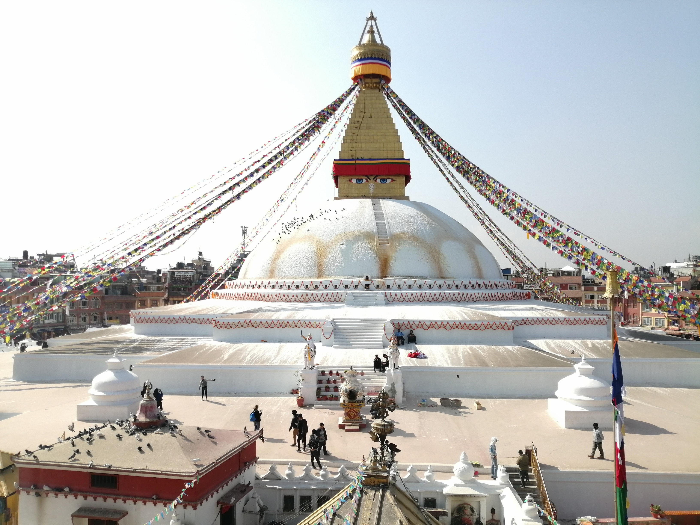
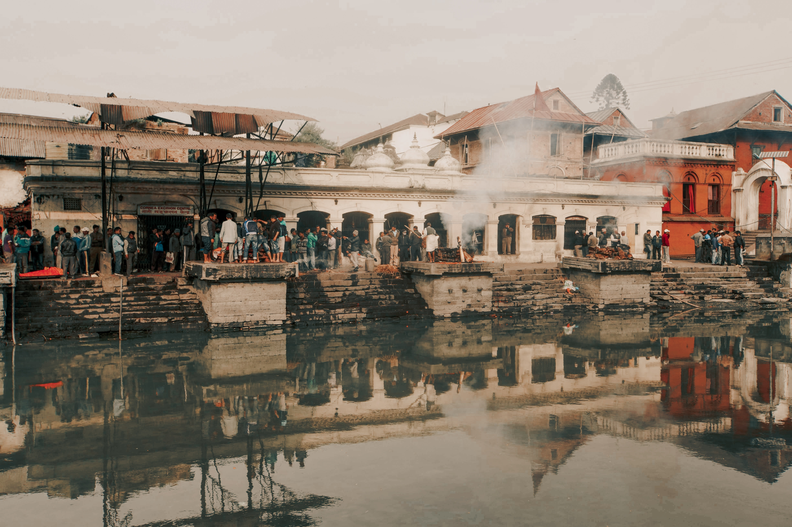
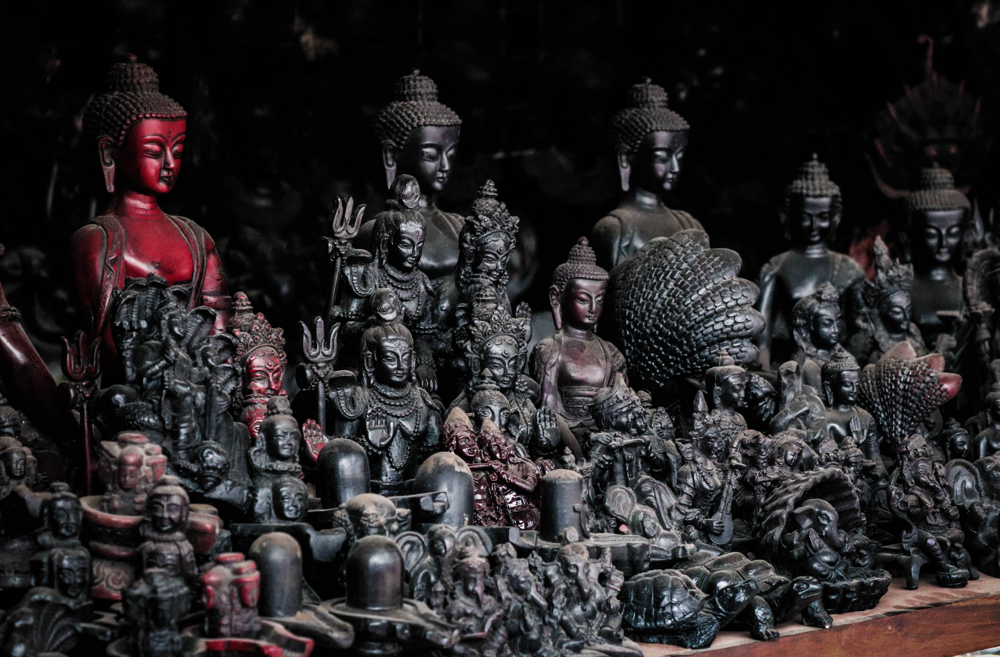
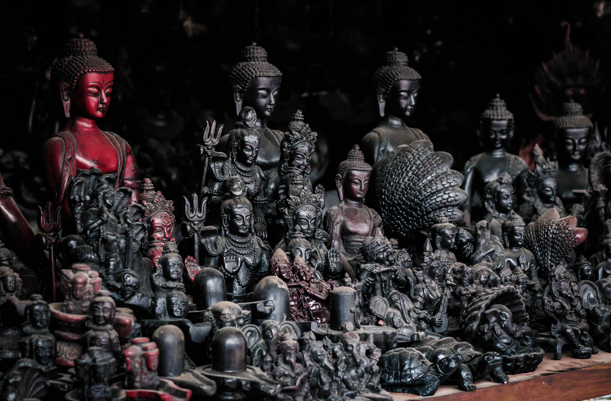
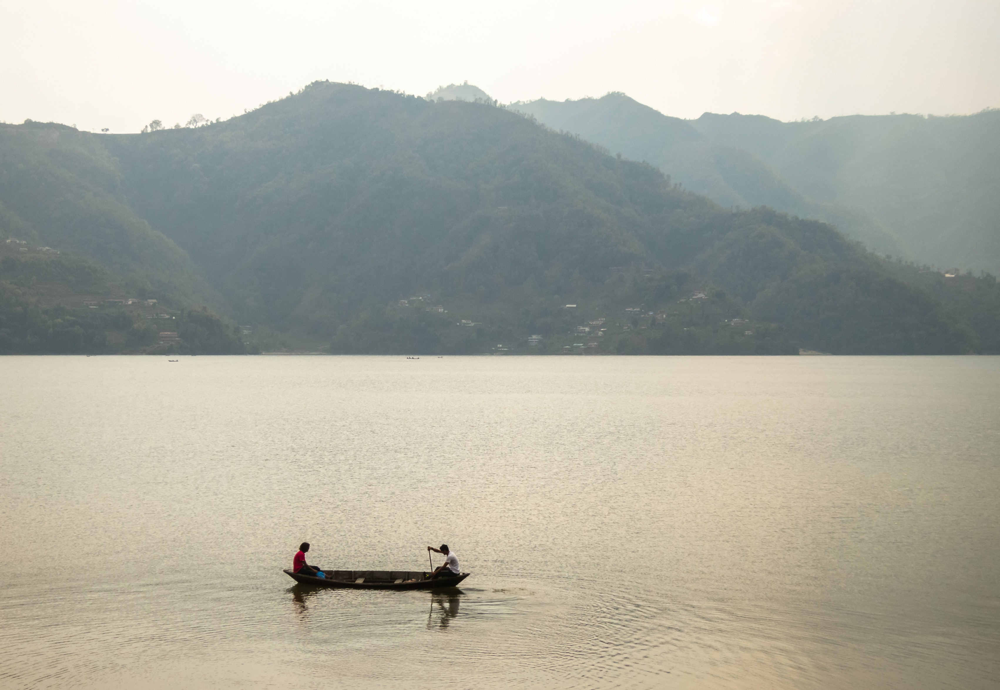
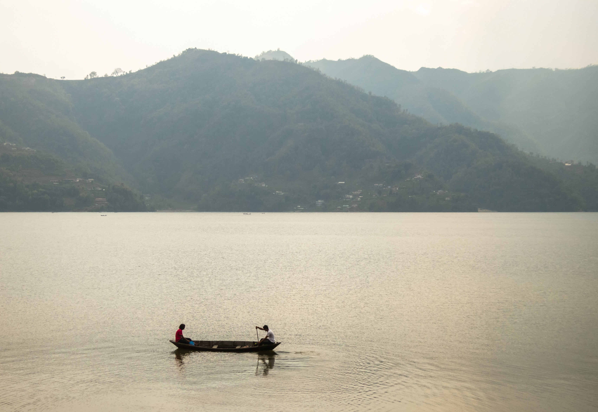

Kathmandu
Kathmandu, the capital and largest city in Nepal, is like no other city
in the world. The decaying buildings in the heart of the city are a
stark contrast to the lively atmosphere that permeates the streets. The
smell of incense wafts from stores while street sellers push their
goods, and people go about their daily lives, all against a backdrop of
historic temples and carved statues.For several hundred years, Kathmandu
was one of three rival royal cities, along with Bhaktapur and Patan.
Situated in close proximity to each other, today these three almost run
together.
The highlight of Kathmandu has long been Durbar Square, the largest of
the palace squares in the three royal cities and a UNESCO World Heritage
Site. Temples and monuments of varying shapes, sizes, styles, and faiths
can be found here.Kathmandu's Durbar Square was severely damaged in the
2015 earthquake, with many buildings destroyed beyond repair, but it
still remains a special place to visit.
Pashupati
Hinduism is the most widely followed religion in Nepal. The country has
embraced this religion and respects it with several sacred places of
interest, including Pashupatinath Temple. The sacred place is considered
one of the most important temples in the world and one of the most
visited tourist places in Kathmandu. The complex is on UNESCO World
Heritage Sites list for decades. The extensive Hindu temple has a
sprawling collection of images, inscriptions, ashrams, temples and
images.
Boudhanath Stupa
A UNESCO World Heritage Site and one of the largest stupas in the world,
the Boudhanath Stupa in Kathmandu is a significant place in Buddhism and
architecture, both. Located on an ancient trade route that entered
Kathmandu from Tibet.The place has seen many traders and travellers
offering prayers to their lord here, as the Stupa is considered to be
the tomb of the remains of Kassapa Buddha. With a lot of legends
attached to the place, it is one of the best places to visit in Nepal
and easily deserves to be called so.
Swayambhunath Stupa
Situated on top of a hill in the Kathmandu Valley, this tourist place in
Kathmandu is an ancient architectural marvel is one of the best
attractions of the city. The entire complex is surrounded by a wide
variety of trees. It comprises of the main stupa, many shrines, temples,
monastery, museum and a well-stocked library. The temples are painted
with the eyes and eyebrows of the Buddha with the number 1 in local
script painted as the nose of the lord, which is a sight to behold in
itself.


 

Pokhara
Pokhara is the city of lakes. There are several lakes in Pokhara and the
prominent ones are Fewa Lake, Rupa Lake and Begnas Lake. Among these
lakes, Fewa Lake is by far the most beautiful lake. Nestled on a little
island on Fewa Lake is the Barahi Temple. For a small charge, you can go
on a boat ride on this lake. The sunlight reflects on the lake and
glitters and the mountains smile upon us in the reflection.
You can walk on the Lakeside enjoying the sight which is an incredible
experience. I regret the fact that when I was a resident here in Pokhara
I overlooked its charms. Lakeside is even prettier in the late evenings,
under the soft glow of lamp posts hung upon the creatively built
restaurants and shops. You can dine here while enjoying the live
entertainments. Other attractions of Pokhara are Davis Fall which is a
beautiful waterfall and Buddha Stupa. Then there is Sarangkot which is a
towering hill that offers a magnificent view of Pokhara from its hill
top.
Phewa Lake
Phewa Lake is a very famous lake located in Kaski District, Gandaki
Province of Nepal. Located in the Pokhara Valley, this lake is popular
among internal and external tourists. The name of this lake is Phewa
Lake as it is near the village of Phewa. It is also called Baidam Lake
as it falls near the village. In the meanwhile, the location of ‘Barahi
Mandir’ has made it possible to identify it in Barah Mandir as well. The
lake has a panoramic view of Machhapuchhre and Annapurna Himal. These
scenes bring joy to everyone’s mind. The view of the sunrise and sunset
is also very stunning and makes the mind happy
Sikles
Sikles is a beautiful indigenous Gurung village located in Kaski
District.This beautiful trek is a great preface to the beauty of the
Annapurna range and the rich culture and their lifestyle of Gurung
community. Sikles is one of the largest model trekking Gurung village in
Nepal and offers an opportunity to learn about this unique traditional
culture. This route is manage and conserved by the Annapurna
Conservation Area and the community to promote tourism. Sikles
Village and Kaphuche trekking is a short and perfect destination from
Pokhara towards Annapurna range of view including Lamjung Himal. It is
roughly 5 hour bus ride from Pokhara. Sikles is located above Madi Khola
at an altitude of 1,981m.
Sarangkot
A small village which has its own natural beauty. The best thing about
the village of Sarangkot is that it lies in the outskirts of the Pokhara city.
Moreover, you will alo get a chance to view the one of the most beautiful Annapurna
Himalayan range. You can also view the orange hues along with some beautiful mountain ranges.

 
